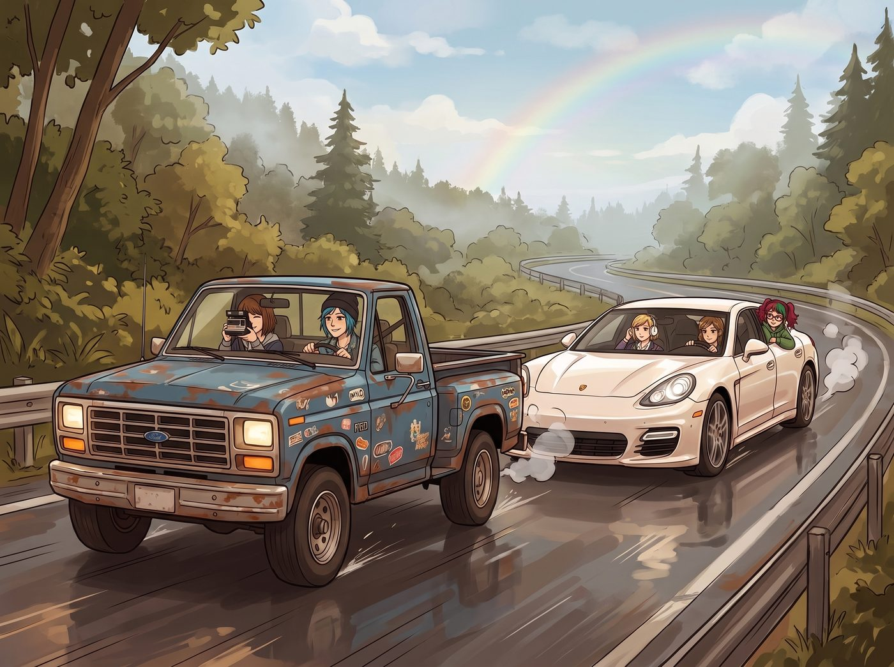
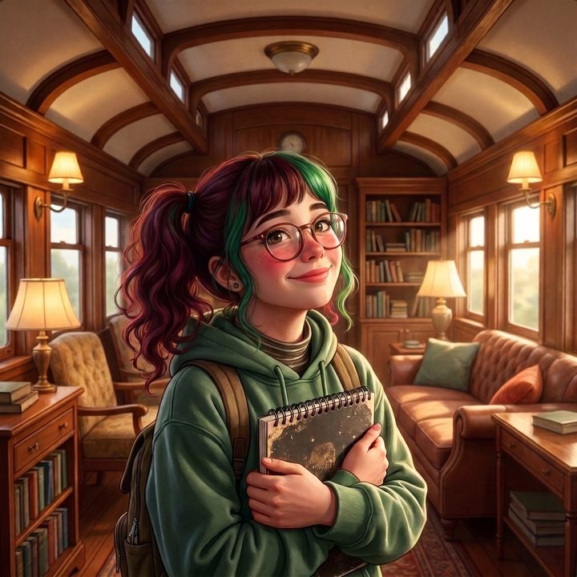

究極文青公路旅行


奧林匹亞半島的雨季暫時停歇，二號車廂的小分隊決定執行「重返童真」計畫的 B 方案：一場徹底遠離文明喧囂、純粹追求精神契合的「究極文青公路旅行」。
行程不設終點，不趕時間，走走停停。車隊配置極具視覺反差：前面是 Chloe 開那輛貼滿龐克貼紙、散發著機油味的破舊皮卡，Max 坐在副駕負責用拍立得捕捉沿途風景；後面是 Victoria 開著她那輛珍珠白的四門保時捷 Panamera，Kate 坐在副駕播放著療癒系的獨立民謠，而「治療對象」Lily 則乖巧地坐在保時捷後座。
這場原本旨在用詩意、遠方和不切實際的浪漫來淨化 Lily 靈魂的療程，從第一天起，就沿著一個不可思議的方向發展去了。
一、水土不服的浪漫
旅行的第一站是國家公園深處一個不知名的、沒有手機訊號的湖泊。
Max 興奮地跑下車，架起老相機，對著湖面的倒影發出感嘆：「妳們看，這光影的律動，簡直就是卡拉瓦喬式的憂鬱……」
Kate 溫柔地閉上眼睛，感受著微風：「空氣裡有雪松和泥土的味道，這就是大自然的呼吸呢。」
Chloe 靠在皮卡車門上，點燃一根菸，雖然沒說話，但神情難得的放鬆。
Victoria 轉過頭，看向她的實習生，期待看到 Lily 被大自然感化的表情。
Lily 確實看得很專注。她拿下那副厚重的圓框眼鏡，用絨布仔細擦拭，語氣溫柔得像是在給嬰兒哺乳：「學姐們說得對。這裡真的太美了。美到……根本不需要任何安保措施。」
Lily 重新戴上眼鏡，轉身面向 Victoria，眼神中充滿了對財團財產的絕對忠誠：
「Victoria 學姐，我剛才目測了一下。這個湖泊周圍方圓兩公里沒有任何閉路電視監控（CCTV），最近的警局在四十公里外。如果我們現在把 Price 學姐那輛骯髒的皮卡推進湖裡，並在警局報案稱其被『具有反社會人格的浣熊組織』盜竊，根據華盛頓州保險法規第 45 條，我們大概率能獲得全額理賠，並以此作為工坊升級 3D 列印機的啟動資金。這簡直是上天賜予我們的合規漏洞啊！」
湖邊的空氣凝固了。
Max 的拍立得相機「咔噠」一聲掉了下來，Kate 的祈禱中斷了，Chloe 嘴裡的菸頭掉在了腳背上。
「我……我是叫妳感受文青氣息！不是叫妳搞保險詐欺！」Victoria 痛苦地捂住臉，感覺自己的高雅教育徹底失敗了。
二、異化的文青日常
不死心的 Max 決定切換療程。她帶著大家來到一個伐木小鎮上的二手書店。
書店裡充滿了霉味和舊書頁的味道。Max 溫柔地對 Lily 說：「Lily，去挑一本妳喜歡的書吧。不用看標題，去感受書脊的溫度，感受那些被無數人翻閱過的靈魂。」
十五分鐘後，Lily 抱著一本厚厚的、皮革裝幀的古籍走了出來。
「我感受到了，Max 學姐。」Lily 露出了一個無比純潔的笑容，「靈魂的味道。」
Max 正準備欣慰地微笑，卻看到 Lily 翻開了那本書——那根本不是什麼詩集，而是一本 1930 年出版的、發黃的《華盛頓州水權與土地徵收法案匯編》。
「這本書太棒了！」Lily 的眼睛裡閃爍著狂熱的技術官僚光芒，「裡面詳細記錄了如何利用古老的『地役權』漏洞，強行徵收私人土地來修建畫廊附屬停車場的法律案例！而且因為是舊書，裡面居然夾著一張 1950 年的納稅憑證！Victoria 學姐！如果我們把這張憑證提交給州歷史文化遺產委員會，我們或許能申請到工坊整體的稅收減免！」
「把妳手裡的法律匯編放下！去給我看那邊的泰戈爾！！」Victoria 的尖叫聲震碎了書店寧靜的氛圍。
三、路邊的「奇蹟」
公路旅行的第三天，她們停在公路邊一處懸崖旁觀看日落。夕陽將太平洋染成了一片血紅，美得驚心動魄。
「這就是生命的顏色啊……」Kate 輕聲感嘆，轉過頭，發現 Lily 破天荒地沒有在翻看法律書籍，而是正趴在保時捷後座的窗戶上，死死地盯著懸崖下方的一塊岩石，眼神充滿了驚恐與無助。
「Lily？怎麼了？」大家緊張地湊了過來，心想難道聖母 Kate 的感化終於起作用，讓實習生感到生命的脆弱了嗎？
「那裡……那裡……」Lily 指著岩石，聲音顫抖，眼眶變紅，彷彿下一秒就要哭出來。
大家順著她指的方向看去，只見那塊岩石上，貼著一張因為日曬雨淋而有些破損的、過期的《西雅圖消防局關於商業場所滅火器配置標準》的宣傳單。
「那張傳單……」Lily 抽泣著，轉過身一把抓住 Kate 的手，表情絕望得像是在面對世界末日，「那張宣傳單上的標準代碼是 2013 版的……那是過時的、已經廢止的標準代碼啊！如果我們畫廊的滅火器也是按照這個過時標準配置的，一旦遇到突擊檢查，我們不僅要面臨罰款，還會因為『消防隱患』而被登上西雅圖商業信用黑名單！Kate 學姐！這太可怕了！我接受不了這種行政上的不完美！！」
「哇啊啊啊啊啊啊——！！！」
Lily 崩潰地把臉埋進 Kate 的懷裡大哭起來，鼻涕泡都哭出來了。這不是為了毛茸茸的小狗，也不是為了被霸凌的同學，她是為了過時的消防標準代碼而感到了靈魂深處的悲痛。
結論：失敗的療程，成功的「進化」
當天晚上，小分隊放棄了繼續旅行，連夜開車回到了二號車廂基地。
「徹底失敗了。」Chloe 癱在吧台前，嚼著冷掉的披薩，語氣麻木，「我以前以為我是個混蛋。直到我看到有人能在泰戈爾的詩集旁邊看土地徵收法。那丫頭根本沒有文青的靈魂，她是由法律條文、行政法規和 14000 頁 FOIA 申請表構成的人形生物。」
Victoria 默默地喝著白蘭地，看著遠處正在……一邊抽泣一邊用化學試劑清洗那本《華盛頓州水權匯編》的 Lily。
「不，Caulfield。」Victoria 的眼神裡閃過一絲連 Max 都看不懂的複雜情緒，那是一種結合了絕望、欣賞與病態驕傲的神情，「妳錯了。我們沒有治癒她。但這場旅行讓她完成了一次終極進化。」
名媛放下酒杯，站了起來，名媛的傲慢重新回到了她的臉上。
「從明天起，不再有什麼『重返童真』計畫。我將正式任命 Lily 為 Chase 財團的『終極合規與行政防禦總監』。既然這世界要給我們垃圾，那我就讓這隻披著羔羊皮的金融死神，用最合法、最禮貌的方式，把這世界碾碎給我們看。」
Max 看著鏡頭裡的 Lily。在相片顯影的那一刻，她似乎看到實習生抬起頭，對著她露出了一個無比純潔、卻又深不見底的天使笑容。
「乾杯，Victoria。」Max 舉起茶杯，絕望地自我調侃，「願上帝保佑那些試圖欺負我們的惡霸，因為 Lily 絕對不會保佑他們的。」
二號車廂的日常再次回歸，但所有人都知道，這條瘋狂的食物鏈，已經進化到了凡人無法理解的高度。